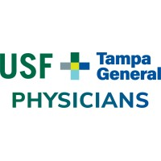
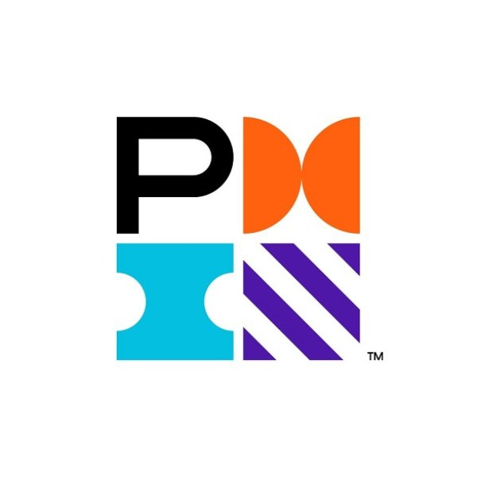

Lead a team of engineers responsible for analytics, automation, and reporting across the entire organization. Built and maintain a portfolio of over 200 reports serving 4,000+ active users. Own product roadmaps, solution architecture, stakeholder engagement, and daily operations within an agile development framework. Present technical and analytical results to C-level executives, translating complex data narratives into executive-level strategic storytelling to drive program buy-in and resource allocation.
Scrum Master driving data product roadmaps across supply chain, merchandising, finance, warehouse, customer care, and marketing. Led initiatives in data analytics, engineering, and process automation — translating business requirements into technical specifications and managing complex programs with multiple decision points and success metrics. Built and enhanced data-driven products using SQL and Python.
Architected end-to-end BI solutions using Microsoft Azure (Power BI, ADF, SSMS, SSIS, SSRS, Logic Apps). Worked directly with senior business leaders across merchandising, logistics, customer experience, finance, advertising, and supply chain.
Led emerging technology programs — built a 3D mixed reality product suite from 0 to 1, infused with machine learning and computer vision, enabling customers to view 3D furniture in their homes. Developed the supporting infrastructure including 3D furniture modeling pipelines, sales associate training, and usage/conversion analytics. Also digitized RTG's trucking operations, led vendor-facing system development, and managed full lifecycle delivery of internal software applications.
Led the development, training, and administration of an internal SharePoint-based platform to track and manage corporate-wide IT initiatives. Served as liaison between executive management, project managers, and developers.
Part of the digital media management team, streamlining and improving databases used to store and transfer media assets across the company.

Defined and developed provider panels using SQL and Tableau. Wrote SQL programs to analyze billing data and evaluate workloads. Managed process rollout across divisions.
Assisted graduate courses in Environmental Law, Sustainable Business Practices, and Social, Ethical & Legal Systems under the USF Director of Sustainable Business.
"I worked with Griffin Brunke on several university projects and found him to be highly knowledgeable, reliable, and consistently on time. He delivers high-quality work and is someone you can depend on."
"One of the most helpful, dependable and professional persons I have ever worked with. A great team player and just a pleasure to work with."

Outside of work, I've spent the past decade giving back through healthcare, education, and mentorship. I currently mentor graduate students at USF exploring careers in product management, data science, and personal finance, and I tutor high school and college students in math and organic chemistry. I've volunteered weekly at the Children's Cancer Center of Tampa, served as VP and Treasurer of USF's Remote Area Medical chapter — helping deliver over $1M in free healthcare annually at the Bradenton clinic — and spent three years in Florida Hospital's ICU, supporting patients and training new volunteers. The common thread is using whatever skills and time I have to make things a little better for the people around me. When I'm not doing any of that, you'll usually find me on a golf course, logging miles on a long run, or chasing the next trip somewhere new.